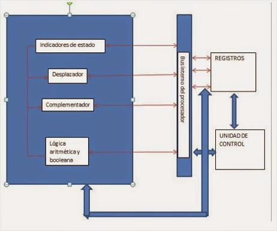

Estructura y funcionamiento de CPU
Unidad 2

La Unidad de Procesamiento (CPU) controla el funcionamiento del computador y lleva a cabo sus funciones de procesamiento de datos. Frecuentemente se le llama procesador. Un procesador, incluye tanto registros visibles por el usuario como registros de control/estado. Los registros visibles por el usuario pueden ser de uso general o tener una utilidad especial, mientras que los registros de control y estado se usan para controlar el funcionamiento del procesador, un claro ejemplo es el contador de programa.
Lleva a cabo una gran variedad de:CPU controla las operaciones básicas del ordenador enviando y recibiendo señales de control, direcciones de memoria y datos de un lugar a otro de la computadora a través de un grupo de canales llamados BUS.
Recibe los datos sobre los que efectúa operaciones de cálculo y comparaciones. Toma decisiones lógicas (determina si una afirmación es correcta o falsa mediante reglas del algebra de Boole) y devuelve luego el resultado. Todo ello bajo supervisión de la unidad de control.
La unidad de control le indica al resto del sistema como llevar a cabo las instrucciones de un programa. Comanda las señales electrónicas entre la memoria y la unidad aritmético-lógica, y entre el CPU y los dispositivos de entrada y salida. Para ejecutar cualquier programa, cada comando del mismo se desglosa en instrucciones.
Los procesadores utilizan la segmentación de instrucciones para acelerar la ejecución. La segmentación de cauce se puede dividir en ciclo de instrucción en varias etapas separadas que operan secuencialmente, tales como la captación de instrucción, decodificación de instrucción, cálculo de direcciones de operando, ejecución de instrucción y estructura del operando resultado.
A continuación se muestra cómo se organiza un procesador, para esto se tiene que considerar los siguientes requisitos:
Para hacer estas cosas, el procesador necesita almacenar instrucciones y datos temporalmente mientras una instrucción está ejecutándose, en otras palabras el procesador necesita una pequeña memoria interna, también llamados registros.
En esta figura se muestra una visión simplificada de un procesador, que indica su conexión con el resto de sistema, a través del bus del sistema. La ALU lleva a cabo el verdadero cálculo o procesamiento de datos. La unidad de control controla la transferencia de datos e instrucciones así a dentro y así afuera del procesador, y el funcionamiento de la ALU. Además la figura muestra una memoria interna mínima, que consta de un conjunto de posiciones de almacenamiento llamadas registros.
En esta figura se indican los caminos de transferencia de datos y de la lógica de control, que incluye un elemento con el rotulo bus interno del procesador. También se muestran los elementos básicos típicos de la ALU. Hay que observar la similitud entre la estructura interna del computador en su totalidad y la estructura interna del procesador. En ambos casos hay una pequeña colección de elementos principales (computador: procesador, E/S, memoria; procesador: unidad de control, ALU, registros) conectados por caminos de datos.
Un registro es una memoria que esta ubicada en el procesador y se encuentra en el nivel más alto en la jerarquía de memoria, por lo tanto tiene una alta velocidad pero con poca capacidad para almacenar datos que va desde los 4 bits hasta los 64 bits dependiendo del procesador que se utilice. Los datos que almacena son los que se usan frecuentemente
El Registro está organizado en una estructura jerárquica compuesta por subárboles con sus respectivas claves, sub claves y entradas. El contenido del Registro puede variar considerablemente de un equipo a otro, en función de los dispositivos, servicios y programas instalados en cada equipo. Las claves pueden contener sub claves que, a su vez, pueden contener otras sub claves. Aunque la mayor parte de la información del Registro se almacena en disco y se considera permanente, algunos datos almacenados en claves volátiles se sobrescriben cada vez que se inicia el sistema operativo.
Minimizan el acceso entre el microprocesador y cpu, debido a que se encuentran dentro del CPU, son manipulables por lenguaje de máquina. Aquí tenemos los 2 principales:
Sirve para direccionamiento, es similar al “PC”, pero tiene un valor base de autoincremento: Ejemplo: Base 3: 3, 6, 9…n, n+1; que se irá sumando para obtener una dirección más efectiva.
Se utilizan para controlar las operaciones del procesador, la mayor parte de estos registros no son visibles al usuario y algunos pueden ser accesibles a las instrucciones de maquina ejecutadas en un modo de control. Los registros utilizados son los siguientes:
En el diseño de la organización de los registros de control y estado entran en juego varios factores. Una cuestión primordial es el soporte del sistema operativo. Algunos tipos de información de control son de utilidad específica para el sistema operativo. Si el diseñador del procesador posee una comprensión funcional del sistema operativo que se va a utilizar, la organización de los registros puede adaptarse hasta cierto punto a ese sistema operativo. Otra decisión importante en el diseño es la distribución de información de control entre registros y memoria. Es frecuente dedicar los primeros (más bajos) pocos cientos o miles de palabras de memoria para fines de control. El diseñador debe decidir cuánta información de control debiera estar en registros y cuánta en memoria. Se presenta el compromiso habitual entre coste y velocidad.
Un ciclo de instrucción (también llamado ciclo de fetch-and-execute o ciclo de fetch-decode-execute )es el período que tarda la unidad central de proceso (CPU) en ejecutar una instrucción de lenguaje de maquina. Comprende una secuencia de acciones determinada que debe llevar a cabo la CPU para ejecutar cada instrucción en un programa. Cada instrucción del Juego de instrucciones de una CPU, puede requerir diferente número de ciclos de instrucción para su ejecución. Un ciclo de instrucción está formado por uno o más ciclos de maquina Para que cualquier sistema de proceso de datos basado en microprocesador (por ejemplo un ordenador) o microcontrolador (por ejemplo un reproductor de MP3) realice una tarea (programa) primero se debe buscar cada instrucción en la memoria principal y luego ejecutarla.
Se vuelca el valor del contador de programa sobre el bus de dirección . Entonces la CPU pasa la instrucción de la memoria principal a través del bus de datos al registro de dirección de memoria MAR). A continuación el valor del MAR es colocado en el registro de instrucción actual (CIR), un circuito que guarda la instrucción temporalmente de manera que pueda ser decodificada y ejecutada.
El decodificador de instrucción interpreta e implementa la instrucción. El registro de instrucción (IR) mantiene la instrucción en curso mientras el contador de programa (PC, program counter) guarda la direccion de memoria de la siguiente instrucción a ser ejecutada. Recogida de datos desde la memoria principal Se accede al banco de registros por los operadores (solo si es necesario) Se calcula el valor del operando inmediato con extensión de signo (solo si es necesario) También se lee la dirección efectiva de la memoria principal si la instrucción tiene una dirección indirecta, y se recogen los datos requeridos de la memoria principal para ser procesados y colocados en los registros de datos.
información como una secuencia de señales de control que son enviadas a las unidades funcionales relevantes de la CPU para realizar la operación requerida por la instrucción poder terminarla y seguir asi.
El resultado generado por la operación es almacenado en la memoria principal o enviado a un dispositivo de salida dependiendo de la instrucción. Basándose en los resultados de la operación, el contador de programa se incrementa para apuntar a la siguiente instrucción o se actualiza con una dirección diferente donde la próxima instrucción será recogida.
Los pasos 3 y 4 del ciclo de instrucción se conocen como ciclo de ejecución. Estos pasos cambiarán con cada tipo de instrucción.
El primer paso del ciclo de ejecución es el proceso de memoria, en que los datos se transfieren entre la CPU y el módulo de E/S. A continuación se produce el proceso de datos, que usa operaciones aritméticas así como lógicas en referencia a los datos. Después tiene lugar el paso de alteraciones centrales, que son una secuencia de operaciones, por ejemplo una operación de salto. El último paso es una operación combinada de todos los otros pasos.